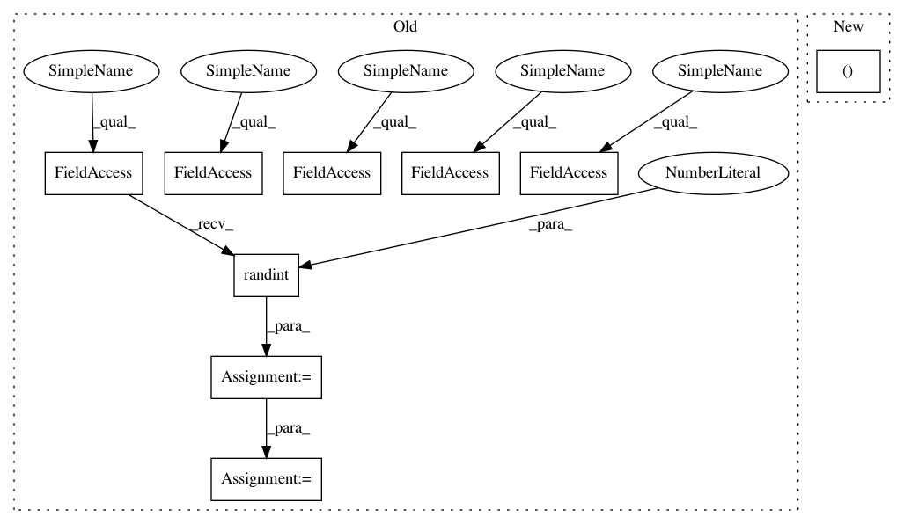

ecc718f66d09caf1003dae3d2b510f6745170c82,tests/test_wpe.py,TestWPE,test_correlations_narrow_v1_vs_v5,#TestWPE#,103
Before Change
def test_correlations_narrow_v1_vs_v5(self):
T = np.random.randint(10, 100)
D = np.random.randint(2, 8)
K = np.random.randint(3, 5)
delay = np.random.randint(0, 2)
Y = np.random.normal(size=(D, T)) + 1j * np.random.normal(size=(D, T))
inverse_power = wpe.get_power_inverse(Y)
R, r = wpe.get_correlations_narrow(Y, inverse_power, K, delay)
R_v5, r_v5 = wpe.get_correlations_narrow_v5(Y, inverse_power, K, delay)
tc.assert_allclose(R_v5, R)
tc.assert_allclose(r_v5, r)
After Change
R_desired, r_desired = wpe.get_correlations_narrow(
self.Y, inverse_power, self.K, self.delay
)
R_actual, r_actual = wpe.get_correlations_narrow_v5(
self.Y, inverse_power, self.K, self.delay
)
tc.assert_allclose(R_actual, R_desired)
In pattern: SUPERPATTERN
Frequency: 3
Non-data size: 9
Instances
Project Name: fgnt/nara_wpe
Commit Name: ecc718f66d09caf1003dae3d2b510f6745170c82
Time: 2017-07-05
Author: ldrude@mail.uni-paderborn.de
File Name: tests/test_wpe.py
Class Name: TestWPE
Method Name: test_correlations_narrow_v1_vs_v5
Project Name: scipy/scipy
Commit Name: d9934d50ff970150978c29b393b66ab73dfe6247
Time: 2014-05-15
Author: andyfaff@gmail.com
File Name: scipy/optimize/_differentialevolution.py
Class Name: DifferentialEvolutionSolver
Method Name: _randtobest1exp
Project Name: fgnt/nara_wpe
Commit Name: ecc718f66d09caf1003dae3d2b510f6745170c82
Time: 2017-07-05
Author: ldrude@mail.uni-paderborn.de
File Name: tests/test_wpe.py
Class Name: TestWPE
Method Name: test_filter_operation_v1_vs_v4
Project Name: fgnt/nara_wpe
Commit Name: ecc718f66d09caf1003dae3d2b510f6745170c82
Time: 2017-07-05
Author: ldrude@mail.uni-paderborn.de
File Name: tests/test_wpe.py
Class Name: TestWPE
Method Name: test_correlations_narrow_v1_vs_v5